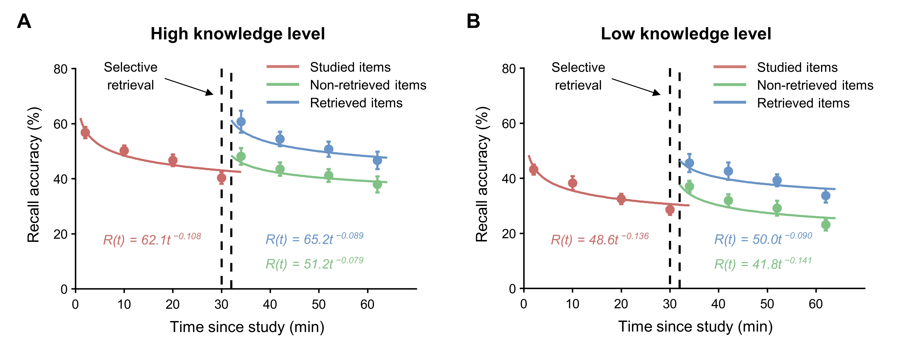

Which memory benefits more from retrieval: a familiar Chinese character you have known for years, such as “国”, or a rare character you have barely encountered, such as “戽”?
Intuition suggests that the familiar one should have two advantages—it should be easier to remember in the first place and should benefit more when we actively try to retrieve it.
Our new study, now published in Psychonomic Bulletin & Review, shows that this intuition is only half right.
Members of AM-LAB examined whether the benefits of selective retrieval depend on prior knowledge by comparing memory for familiar and rare Chinese characters. As expected, prior knowledge gave memory a clear advantage: familiar characters were remembered better overall.
But that advantage did not translate into a larger retrieval benefit. Selective retrieval boosted recall not only for the information that was directly retrieved, but also for related information that had not itself been retrieved. Crucially, these benefits were comparable for high- and low-knowledge materials. Memory continued to decline afterward, yet the subsequent forgetting patterns were also remarkably similar across knowledge levels.
In other words, prior knowledge gave memory a head start, but not a larger “retrieval bonus.”

These findings reveal an important distinction between how much we remember and how memory responds to retrieval. Although rich prior knowledge supports stronger overall memory, active retrieval can still benefit information for which learners have little pre-existing knowledge, suggesting that the benefits of retrieval may extend beyond familiar material and remain valuable even at the earliest stages of learning something new.